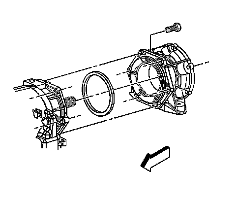

Case Adapter: Service and Repair
Transfer Case Adapter Replacement
Removal Procedure

1. Remove the transfer case.
2. Remove the transmission mount.
3. Remove the transfer case adapter bolts.
4. Remove the adapter.
5. Remove the adapter seal.
Installation Procedure
Important: Always use a new seal for the adapter. Do not use any type of sealant or adhesive in place of or with the seal.
1. Install a NEW seal onto the adapter.
Important: The transfer case adapter must be installed so that the adapter is evenly seated to the transmission before installing the retaining nuts.
2. Install the adapter.
Notice: Refer to Fastener Notice.
3. Install the adapter bolts.
Tighten the bolts to 50 N.m (37 lb ft).
4. Install the transmission mount.
5. Install the transfer case.